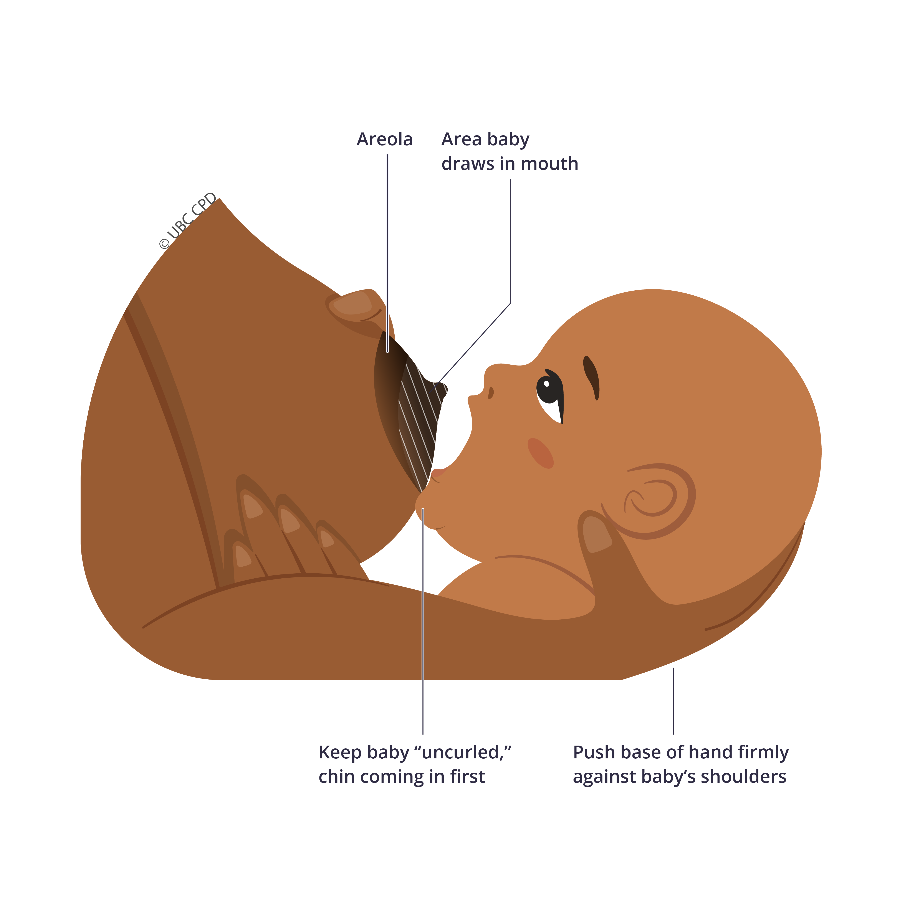

2022-2023
UBC CPD eLearning
Project Type
Internship
Role
Interactive Design Intern/Illustrator
UBC Continuing Professional Development (CPD) is an academic unit under University of British Columbia’s Faculty of Medicine. UBC CPD offers online course modules for practicing physicians to allow them to continue their medical education, imbue professional growth, and quality of practice. I had the opportunity to be an Interactive Design Intern for UBC CPD under the Creative Learning department. Throughout my internship, I created a plethora of illustrations, such as updating course banners to fit UBC CPD’s current branding, graphic learning material and spot illustrations for our online courses.
